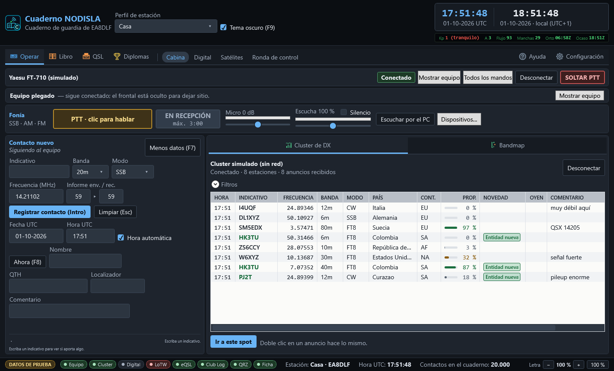
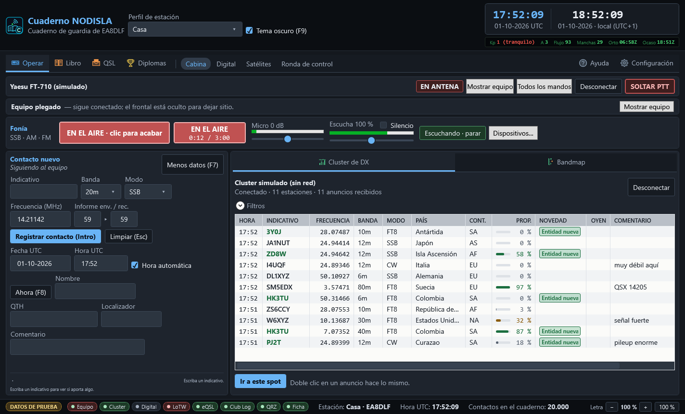
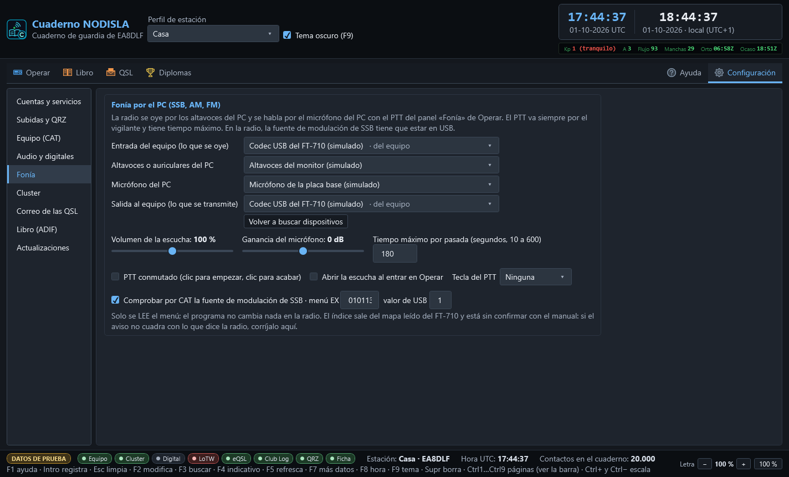

Fonía por el PC
El panel Fonía de Operar › Cabina permite trabajar SSB, AM y FM con el ordenador: la radio se oye por los altavoces del PC y se habla por el micrófono del PC, con un botón de PTT en pantalla.

Dónde está
- Con el frontal del equipo a la vista, el panel va en columna a la derecha del frontal, en el hueco que queda libre: no quita alto al contacto nuevo ni al cluster.
- Con el frontal plegado («Ocultar equipo»), el panel pasa a una franja bajo la barra del equipo.


Escuchar la radio por el PC
Pulse «Escuchar por el PC». El audio que sale del codec USB del FT-710 («Micrófono (USB Audio Device)») se lleva a los altavoces o auriculares del PC, con poco retraso (del orden de una décima de segundo).
- El control deslizante de Escucha es el volumen (de 0 a 200 %) y la barra verde, lo que llega del equipo.
- Silencio calla los altavoces sin cerrar la escucha.
- El módem digital puede estar escuchando a la vez: el audio del equipo se comparte, no se lo queda nadie.
- Si la radio se apaga o se desenchufa el USB, el panel lo dice («No llega audio del equipo…» o «La escucha por el PC se ha cortado») y la escucha se cierra sola; vuelva a pulsar cuando el equipo esté otra vez encendido.
Hablar: el PTT de fonía


- Mantener pulsado (por omisión): se transmite mientras el botón está pulsado y se vuelve a recepción al soltarlo.
- Conmutado (en Configuración › Fonía): un clic empieza y otro clic acaba.
- Tecla del PTT (en Configuración › Fonía, por omisión ninguna): F10, F11, F12, Pausa, Bloq Despl, Insert o Ctrl derecho. Solo funciona con la ventana del programa activa y nunca con el cursor en un campo de texto, para que escribir un indicativo no le saque al aire.
Mientras transmite, el cartel dice EN EL AIRE con el tiempo que lleva y el máximo, la barra Micro enseña su nivel (si pone SATURA, baje la ganancia) y los altavoces del PC se callan solos para que el micrófono no los oiga.
Cuándo se suelta solo
El PTT de fonía va siempre por el mismo vigilante que el de los modos digitales. Se suelta:
- al soltar el botón o la tecla (o al segundo clic, en conmutado);
- con SOLTAR PTT de la barra del equipo;
- al llegar al tiempo máximo de la pasada (3 minutos por omisión; se cambia en Configuración › Fonía, de 10 a 600 segundos; manda el menor entre este y el del vigilante);
- si el programa pierde el foco (otra ventana pasa delante) o se cambia de página;
- si el audio del micrófono o del equipo se queda parado más de dos segundos;
- si el equipo pasa a un modo de datos, se pierde la comunicación con él o el programa se cierra.
Cuándo no se puede
El botón se apaga, y dice por qué, cuando:
- el equipo no está conectado;
- el equipo está en DATA, CW, RTTY u otro modo que no es de voz (para no mezclarse con el módem);
- no están elegidos el micrófono del PC y la salida hacia el equipo;
- ya hay otra transmisión en el aire (por ejemplo, del módem).
Dispositivos
«Dispositivos…» abre los cuatro selectores (también están en Configuración › Fonía):
| Selector | Qué poner |
|---|---|
| Micrófono del PC | el micro o los auriculares con micro del PC |
| Altavoces del PC | los altavoces o auriculares del PC |
| Entrada del equipo | «Micrófono (USB Audio Device)», marcado «del equipo» |
| Salida al equipo | «Altavoces (USB Audio Device)», marcado «del equipo» |
Los del equipo se reconocen solos. Si algo está cruzado —el micro es la entrada del equipo, o los altavoces son la salida al equipo— el panel avisa en naranja.


En la radio: la fuente de modulación
Para que la voz del PC salga al aire, el FT-710 tiene que tomar el audio de USB y no del micrófono de la radio en los modos de voz. Mírelo en el menú de la radio, en la parte de MODE SSB (y en AM/FM si los va a usar): la fuente de modulación tiene que estar en USB («REAR»/«USB» según la pantalla). El programa no cambia menús de la radio.
El programa lee (sin escribir nada) el menú EX010113 al conectar en USB o LSB, o al pulsar «Comprobar la radio», y avisa si no vale «1». Ese índice sale del mapa leído del propio equipo y está sin confirmar con el manual: si el aviso no cuadra con lo que enseña la radio, corrija el índice o el valor en Configuración › Fonía, o desmarque la comprobación.
Ajuste también en la radio el nivel de entrada USB (USB MOD GAIN o equivalente) para que la ALC apenas se mueva con la ganancia del micro a 0 dB.